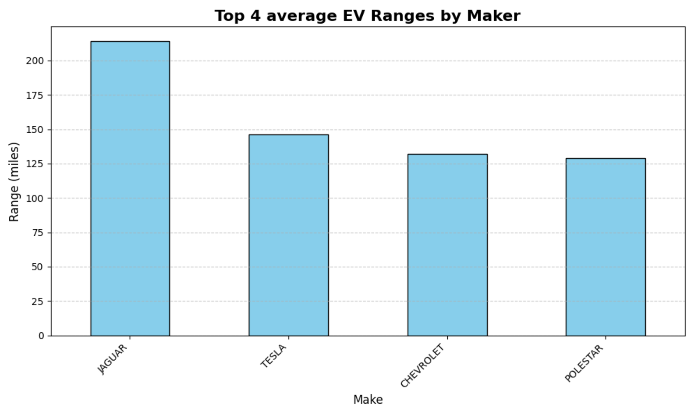

Car is the second most expensive single purchase after a home for many consumers electric vehicle is the future direction There may exist a potential niche market inside the most common sub-group of US EV consumers.
Identify the average age of US EV, most common Brand, EV Model and averages ranges.
 There were 46 number of EV makers, 170 different EV models, and total of 231,715 EVs in Washington only. The most common car was Model Y, Most common Maker was Tesla, and the most common age of vehicle is 2 years old. Further analysis is available on source code at Github link below.
During the datacleaing process Geological data is lost and only dataset of Washington was available. While there will be more EVs in the future, integrating with existing ICE vehicles could provide more insight as of now. Future studies would improve by addressing the issues above.